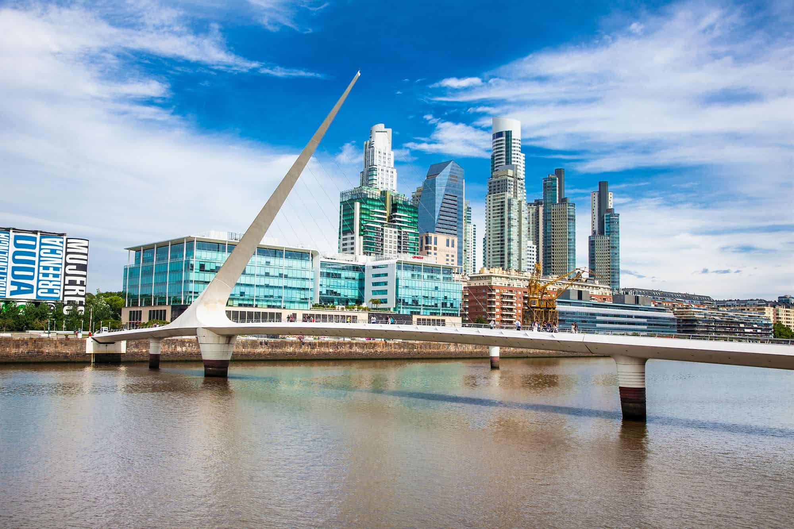

Idée voyage en petit groupe !
Argentine
Passion, Vin & Altitude
Buenos Aires · Mendoza · Andes
- Tango, asados & quartiers historiques
- Initiation tango à Buenos Aires
- Vignobles & Malbec à Mendoza
- Cerro de la Gloria & oasis andine
- Aconcagua & Pont de l'Inca
- Bus-lit de nuit Buenos Aires → Mendoza

vpdvoyages.com